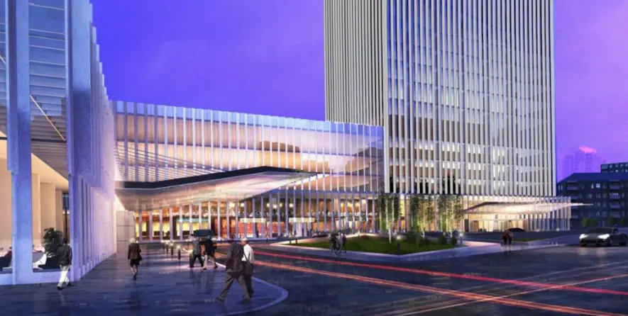
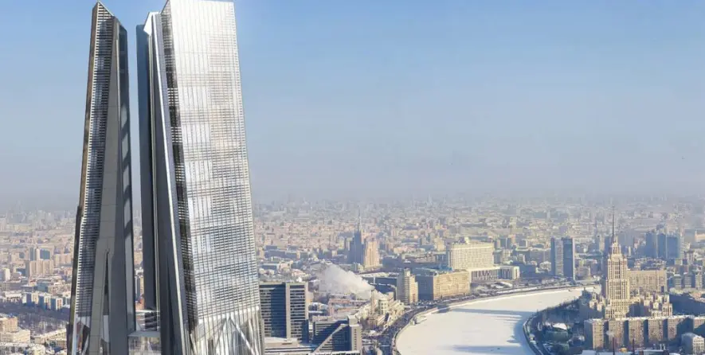
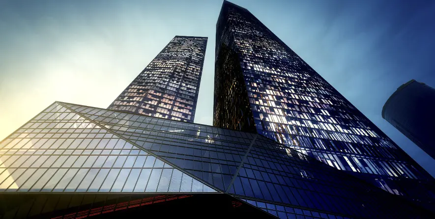
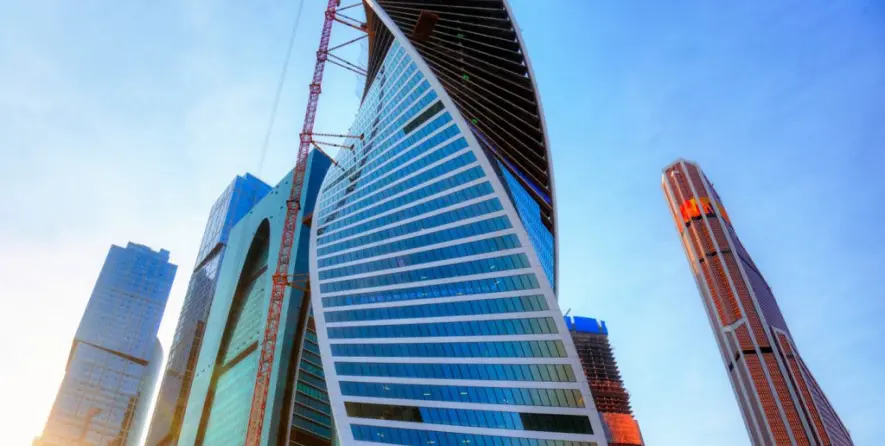
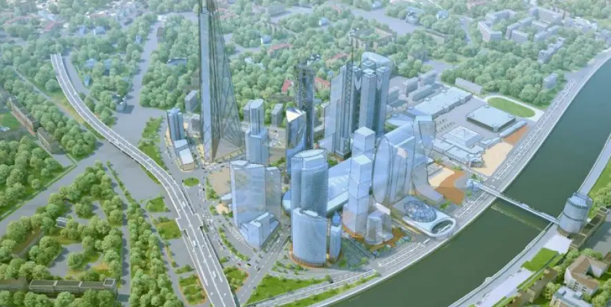
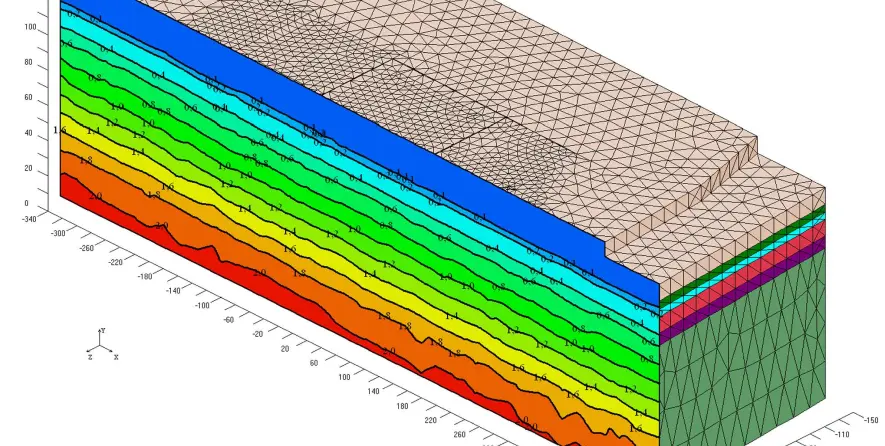
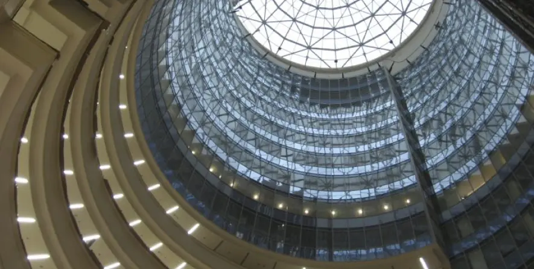
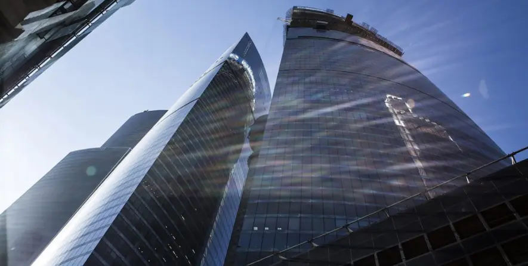
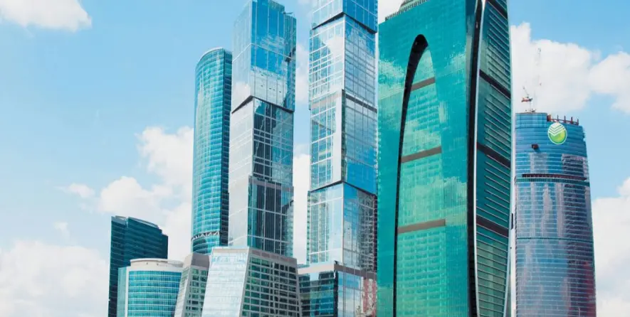
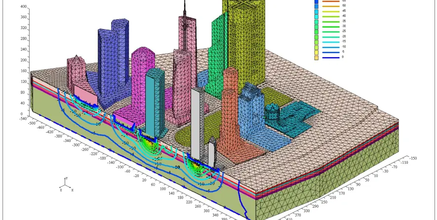

Москва-Сити
К проектам-
Renaissance Moscow Towers
2013-2008
Актуализация инженерно-геологических изысканий на уч. № 17-18 ММДЦ «Москва-Сити». Бурение инженерно-геологических скважин до глубины 100 м, прессиометрические испытания, лабораторные исследования, гидрогеологическое моделирование Результаты работ прошли государственную экспертизу, ведется строительство.
 -
Башня «Россия»
2007
Башня «Россия» на уч. №17-18 ММДЦ «Москва-Сити». Бурение более 60 инженерно-геологических скважин глубиной до 100 м, геофизические исследования, межскважинное сейсмическое прозвучивание, прессиометрические испытания, опытно-фильтрационные работы, лабораторные исследования, гидрогеологическое и геомеханическое моделирование, и другие исследования для реализации этого уникального проекта
 -
Башни «Око»
2007
Башня «Россия» на уч. №17-18 ММДЦ «Москва-Сити». Бурение более 60 инженерно-геологических скважин глубиной до 100 м, геофизические исследования, межскважинное сейсмическое прозвучивание, прессиометрические испытания, опытно-фильтрационные работы, лабораторные исследования, гидрогеологическое и геомеханическое моделирование, и другие исследования для реализации этого уникального проекта
 -
Башня «Эволюция»
2006
Башня «Evolution» на уч. 2-3 ММДЦ «Москва-Сити» Бурение инженерно-геологических скважин до глубины 40-80 м, прессиометрические испытания грунтов, опытно-фильтрационные работы, лабораторные исследования, гидрогеологическое моделирование, оценка геологических рисков. Строительство завершено в 2014 году
 -
Выставочно-деловой комплекс
2006
Анализ геологических условий территории ММДЦ «Москва-Сити» в предпроектных предложениях. Анализ материалов изысканий на разных участках ММДЦ «Москва-Сити», гидрогеологическое и геомеханическое моделирование
 -
Анализ геологических условий территории
2005
Анализ геологических условий территории ММДЦ «Москва-Сити» в предпроектных предложениях. Анализ материалов изысканий на разных участках ММДЦ «Москва-Сити», гидрогеологическое и геомеханическое моделирование
 -
Комплекс «Северная Башня»
2004
Комплекс «Северная башня» на уч. №19 ММДЦ «Москва-Сити». Дополнительные исследования для уточнения закарстованности массива» Бурение инженерно-геологических скважин глубиной до 20 м, лабораторные исследования. Сооружение построено в 2005 году
 -
Комплекс «Федерация»
2003-2004
Комплекс «Федерация» на 13-м участке ММДЦ «Москва-Сити». Бурение инженерно-геологических скважин до глубины 50-100 м, проведение геофизического каротажа, опытно-фильтрационные работы, лабораторные исследования, электромагнитное обследование участка. Проект находится в завершающей стадии строительства
 -
Башня «Империя»
2001
Высотное здание на уч. 4 ММДЦ «Москва-Сити». Бурение инженерно-геологических скважин, лабораторные исследования, опытно-фильтрационные работы. Проект реализован в 2011 г. в измененном виде
 -
Гидрогеологичес-кий мониторинг территории
1996-2015
Высотное здание на уч. 4 ММДЦ «Москва-Сити». Бурение инженерно-геологических скважин, лабораторные исследования, опытно-фильтрационные работы. Проект реализован в 2011 г. в измененном виде
